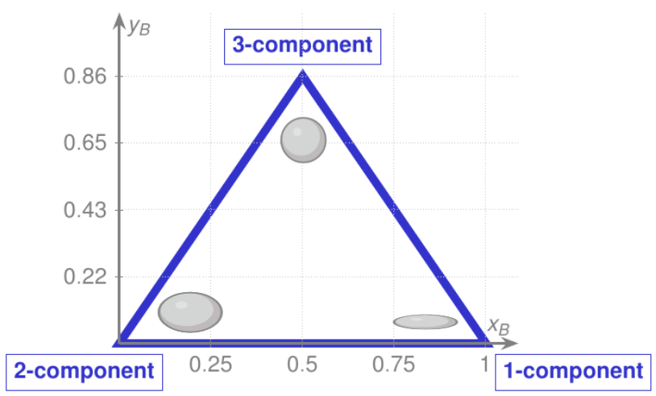
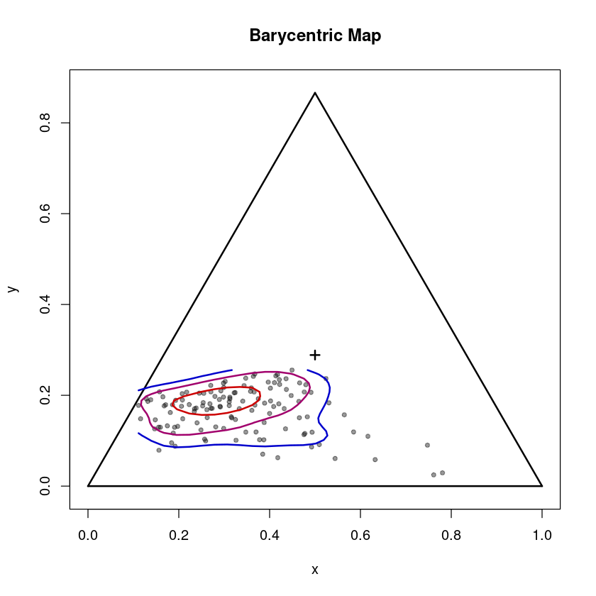
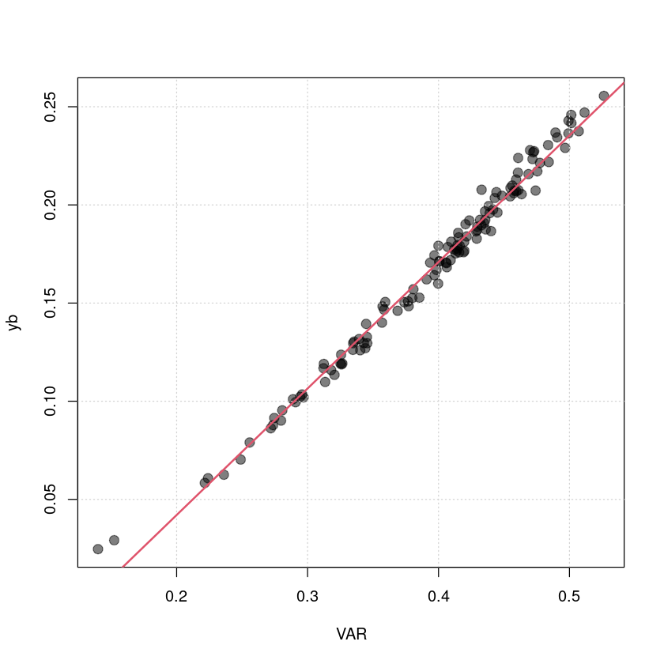

6 Reynolds stress tensor
The Reynolds stress tensor \[ R := \overline{u_i ' u_j '} = \begin{pmatrix} u'^2 & \overline{u'v'} & \overline{u'w'} \\ \overline{v'u'} & v'^2 & \overline{v'w'} \\ \overline{w'u'} & \overline{w'v'} & w'^2 \end{pmatrix}, \quad \textrm{with} \quad R = R^T\] summarizes all normal and shear stresses. Based on an invariant analysis, the most important geometric properties can be derived from its eigenvalues and eigenvectors. Using a linear combination of the three eigenvalues, a two-dimensional mapping into an equilateral triangle – called barycentric map (Banerjee et al. (2007), see figure) – with the coordinates \((x_B,y_B)\), can be constructed, which allows to characterize the anisotropy (\(y_B\)) and the limiting states. The three corners of the triangle represent the three limiting state 1-, 2- and 3-component limit, where the 3-component limit corresponds to isotropic turbulence. The 2-component limit represents “disk-like” turbulence associated with strong wind shear and the 1-component limit “rod-like” turbulence, which is related to wave-like motions, e.g. internal gravity waves.

#loading Reddy package
install.packages("../src/Reddy_0.0.0.9000.tar.gz",repos=NULL,source=TRUE,quiet=TRUE)
library(Reddy)
#read in processed example data
dat=readRDS("../data/ec-data_30min_processed/processed_data_example.rds")6.1 Invariant analysis of the Reynolds stress tensor
6.1.1 Performing the invariant analysis of the Reynolds stress tensor with calc_anisotropy
The function calc_anisotropy calculates the invariant analysis and takes for this vectors for all six independent components of the Reynolds stress tensor as input (since it is symmetric there are only six not nine independent entries) in the form
\[ R = \begin{pmatrix}
a_{11} & a_{12} & a_{13}\\
a_{12} & a_{22} & a_{23} \\
a_{13} & a_{23} & a_{33}
\end{pmatrix}
\]
and in the order \(a_{11}, a_{12}, a_{13}, a_{22}, a_{23}, a_{33}\).
rey_ana = calc_anisotropy(dat$u_sd^2,dat$cov_uv,dat$cov_uw,dat$v_sd^2,dat$cov_vw,dat$w_sd^2)
str(rey_ana)List of 6
$ xb : num [1:127] 0.348 0.249 0.326 0.257 0.188 ...
$ yb : num [1:127] 0.119 0.124 0.101 0.103 0.117 ...
$ eta : num [1:127] 0.165 0.152 0.166 0.157 0.148 ...
$ xi : num [1:127] -0.0562 -0.1214 -0.0821 -0.1202 -0.1353 ...
$ eigenvalues : num [1:127, 1:3] 0.283 0.232 0.281 0.245 0.204 ...
$ eigenvectors: num [1:127, 1:3, 1:3] 0.89759 0.93931 0.86082 0.00664 -0.64731 ...The output contains the coordinates of the barycentric map (xb, yb) and of the Lumley triangle (eta, xi) as well as all eigenvalues and eigenvectors.
6.1.2 Plotting the barycentric map using plot_barycentric_map
The function plot_barycentric_map takes xb, yb as input (as calculated in the invariant analysis before) and plots them in the barycentric map.
plot_barycentric_map(rey_ana$xb,rey_ana$yb)
The three corners of the tringle represent the three limiting state: 3-component limit (isotropic, “sphere-like”) at \((0.5,\sqrt{3}/2\)), 2-component limit (“disk-like”) at \((0,0)\) and 1-component limit (“rod-like”) at \((1,0)\). \(y_B\) is a measure for anisotropy – from \(y_B = 0\) completely anisotropic to \(y_B = \sqrt(3)/2\) perfectly isotropic.
Anisotropy leads to deviations from classical scaling functions used in Monin-Obukhov similarity theory, e.g. Stiperski, Calaf, and Rotach (2019) and Stiperski and Calaf (2023).
6.2 Anisotropy and velocity aspect ratio (VAR)
The velocity aspect ratio VAR (calc_var) is an approximation of anisotropy that only takes the diagonal elements of the Reynolds stress tensor, i.e., \(\sigma_u, \sigma_v,\sigma_w\), into account (Mahrt 2010). A deviation from a linear regression between VAR and \(y_B\) allows quantify the effect of shear stresses. As seen in the plot below, for small values of \(y_B\), i.e., very anisotropic, is the deviation from the linear fit larger than for higher values of \(y_B\).
var=calc_var(dat$u_sd,dat$v_sd,dat$w_sd)
plot(var,rey_ana$yb,col=rgb(0,0,0,0.5),pch=20,cex=2,xlab="VAR",ylab="yb")
grid()
fit=lm(rey_ana$yb~var)
abline(fit,lwd=2,col=2)
print(summary(fit))Call:
lm(formula = rey_ana$yb ~ var)
Residuals:
Min 1Q Median 3Q Max
-0.011421 -0.003373 -0.001110 0.003227 0.021316
Coefficients:
Estimate Std. Error t value Pr(>|t|)
(Intercept) -0.08683 0.00265 -32.77 <2e-16 ***
var 0.64442 0.00660 97.64 <2e-16 ***
---
Signif. codes: 0 ‘***’ 0.001 ‘**’ 0.01 ‘*’ 0.05 ‘.’ 0.1 ‘ ’ 1
Residual standard error: 0.005629 on 125 degrees of freedom
Multiple R-squared: 0.9871, Adjusted R-squared: 0.987
F-statistic: 9534 on 1 and 125 DF, p-value: < 2.2e-16
References
Banerjee, S., R. Krahl, F. Durst, and C. Zenger. 2007. “Presentation of anisotropy properties of turbulence, invariants versus eigenvalue approaches.” J Turb 8 (N32). https://doi.org/10.1080/14685240701506896.
Mahrt, L. 2010. “Variability and Maintenance of Turbulence in the Very Stable Boundary Layer.” Boundary-Layer Meteorol 135: 1–18. https://doi.org/10.1007/s10546-009-9463-6.
Stiperski, I., and M. Calaf. 2023. “Generalizing Monin-Obukhov similarity theory (1954) for complex atmospheric turbulence.” Phys Rev Lett 130. https://doi.org/10.48550/arXiv.2206.14592.
Stiperski, I., M. Calaf, and M. W. Rotach. 2019. “Scaling, Anisotropy, and Complexity in Near-Surface Atmospheric Turbulence.” J Geophys Res Atmos 124: 1428–48. https://doi.org/10.1029/2018JD029383.